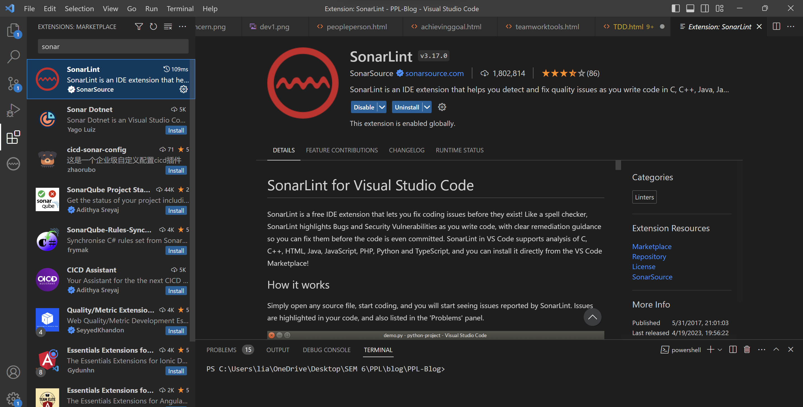

Test Driven Programming
by Kevin Razaqa Aulia
Updated on May 2023
On this section i will focus on what we as a SCRUM team did on our project spesifically about implementing Test Driven Development.
So, on our project we basically try to implement the test or unit test for every single function that we implemented on our project. The main reason is for making it easier for us to see and manage which code or function that already passed the test and ready to use.

As we can see from the picture above we have the test folder in our project to make it even easier for us to manage the test itself.
Other reason for us to use or implementing the TDD on our project is to make us find the bugs faster and more precise.
Now, lets get into the details. I will share with you the real example of working with TDD or test driven development.

First, we can see that what i did is setting up the variable for the test itself.
Second, as we can see i divided the test into two part to make the coverage even better and we will get the right idea if the code goes wrong or there are couple of bugs that we have to fix. The first part is positive test as we can see for example i made the test for the page and make sure it loads sucessfully. There is a couple more test that i also made fot this part.

Third, we can see from the picture above we have the negative test. This is the second part of the test that i mentioned earlier. On this part of the test, the idea is to make sure that the function that we created work. For example, i tested if the user that have a different role can access the page that can only be accessed with another role. From this part, we would know that if the function not working properly. This part also become important because we cannot tolarate a leak of functionality such as a basic role can do what admin role do.

As shown above, i also commit my work whit tag such as [RED] for work that has not passed the test yet. [GREEN] means the code is already passed the unit test.
